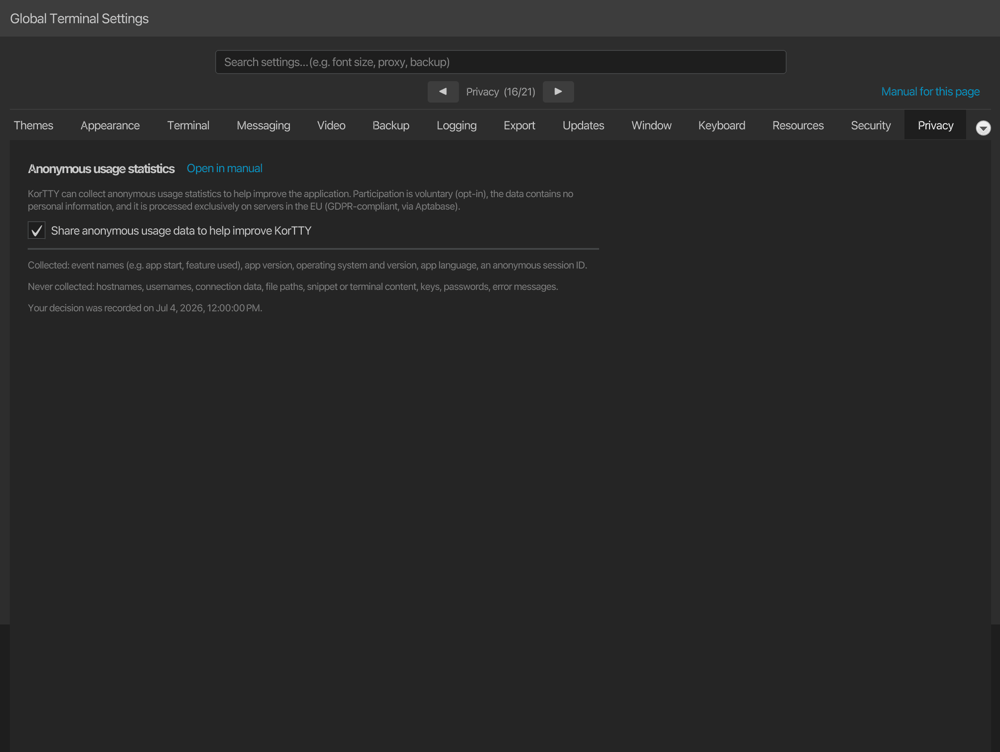

Anonymous data for application optimization¶
korTTY can collect anonymous usage statistics to help decide which features are worth improving and to find crashes and frequent errors. This is entirely optional and can be turned on or off at any time. On a first launch the checkbox in the master-password setup comes pre-selected, so confirming that dialog as-is starts collection — clear it there, or switch it off later, and nothing is collected.

Overview¶
- Your decision, once. Nothing is collected before you confirm. You are asked once, together with the master-password setup on first launch, where the checkbox is pre-selected; existing installations are asked once, in a dialog shown after the main window opens, which counts every dismissal as "no".
- Anonymous. No account, no login, and no persistent device identifier is transmitted.
- Revocable. You can change your decision at any time under Settings → Privacy. Turning it off stops collection immediately and discards any data that has not yet been sent.
What is collected¶
| Data | Example |
|---|---|
| Event names | app start, feature used (e.g. a tool opened, a backup created) |
| Aggregate counts and flags | number of open terminal tabs, whether AI is enabled |
| App version | the korTTY version shown under Help → About |
| Operating system and version | macOS 15, Windows 11, Linux |
| App language | de, en |
| Whether korTTY runs from an installed package or a development build | isDebug |
| An anonymous session ID | a random number regenerated on every launch and after one hour without events |
The session ID is not a persistent identifier: it is newly generated each time and cannot be traced back to you across launches. Every event carries only these common fields, the event name, the time it was created and the values listed for it below. There is no installation id, no hostname and no user name in the data.
Every event korTTY can send¶
The tables below list every event, when it is sent and which values go with it. Values are fixed names from a short list, true/false flags or counts. Some counts are rounded down to a step (the tables say which: 0, 1, 2, 3, 5, 10 or 20 for panes, tabs and windows, so seven panes are reported as 5; 0, 1, 2, 5, 10, 50, 100 or 1000 for transferred files; 0, 1, 2, 5, 10 or 50 for uploads of an edited file); the other counts are exact numbers.
Application, errors and settings¶
| Event | Sent when | Data |
|---|---|---|
app_started |
collection becomes active: at startup with your consent recorded, or the moment you consent in the setup dialog, the one-time prompt or Settings | nothing besides the common fields |
app_crash_detected |
korTTY starts and finds that the previous run with collection active did not end cleanly | the version that crashed |
app_error |
korTTY logs an error outside its own telemetry code; each distinct error is reported once per run, at most 20 per run | the exception class name, the korTTY class and method it came from (or external) and the logger name; never the message text |
usage_snapshot |
once at startup and once at shutdown | exact counts and flags: windows, terminal tabs, keys, credentials and snippets, whether AI is enabled and how many profiles exist, Teamwork sources, coding agents seen, Control API and MCP calls in this run |
ai_profile_snapshot |
once per configured AI profile at startup | the profile's connection mode (http_api, local_cli, embedded_llama_cpp, embedded_mlx), the CLI provider id or none, the model family (openai, anthropic, google, minimax, meta, mistral, deepseek, qwen, phi, cohere, xai, auto or other) and its position in the list |
window_opened |
a main window is created | the number of open windows |
setting_changed |
you save Global Settings and a setting has a new value; at most 25 per save | the setting's name and tab and, for switches, numbers and choices, the new value; for the font family and the terminal colours no value; for quick-select letters and patterns, rebound shortcuts, the start directory, the API URL and region and the external editor command only whether one is set |
master_password_changed |
a master-password change has re-encrypted every store | nothing besides the common fields |
update_check_clicked |
you click the manual update check | nothing besides the common fields |
Terminal and tabs¶
| Event | Sent when | Data |
|---|---|---|
terminal_tab_opened |
a new terminal tab starts connecting | the protocol (ssh_tcp, mosh, mosh_client, local_shell) and the number of tabs in the window |
terminal_split_created |
a pane is split | same_server_new_shell or new_connection, and the number of panes in the tab |
broadcast_toggled |
broadcast mode of a split tab is switched | on or off, and the number of panes |
multi_exec_changed |
you add panes to multi-exec, remove them or stop it | whether multi-exec is still on, and the rounded number of panes, tabs and windows taking part |
terminal_highlight_applied |
a pane starts showing another highlighting rule set | a built-in set's id (builtin.errors, builtin.network, builtin.network-devices), or custom or none, and where the choice came from (menu, shortcut, connection or default) |
terminal_effect_applied |
a terminal effect starts on a pane | the effect plugin's id |
terminal_log_started |
terminal logging starts in a pane | the log format (plain_text, xml, json) |
session_isolation |
an isolated or incognito terminal session connects | the isolation level asked for (none, process, sandbox), the state it got (none, process, sandboxed, degraded), the operating system family and whether the tab is incognito |
session_restored |
the previous session is opened again | the Session Restore setting (ask, auto or off), whether the menu, the startup bar or the automatic restore opened it, and the rounded number of windows and tabs |
fullscreen_entered |
the window goes full screen | os for the operating system's full screen, terminal_only for korTTY's terminal-only mode |
command_palette_used |
a row of the command palette runs | the kind of row (action, tab, connection or snippet) and whether the search started with a scope prefix such as > or @ |
file_loaded_as_text |
a file is opened as text from a terminal selection or the file browser | terminal_selection or file_browser |
Windows, panels and tools¶
| Event | Sent when | Data |
|---|---|---|
dashboard_toggled |
the dashboard is shown or hidden | shown or hidden |
dashboard_action |
a row action of the dashboard runs | reconnect, close, focus, sftp_manager or duplicate |
file_browser_toggled |
the file browser is shown | left or right |
file_browser_action |
a menu or context-menu action of the file browser runs | the action: open, load_as_text, copy, cut, paste, delete, copy_path, details, archive, new_folder, new_file, rename or owner_permissions |
coding_agent_panel_toggled |
the Coding Agents panel is shown, hidden or moved | HIDDEN, LEFT or RIGHT |
journal_live_panel_toggled |
the Live Journal panel is shown, hidden or moved | HIDDEN, LEFT or RIGHT |
tool_opened |
a tool window opens | which one: ai_swarm, teamwork_settings, terminal_effect_manager, ascii_art, session_processes, video_manager, snippet_manager (with tab or window), job_scheduler, ai_manager, saved_chats, session_journals or manual |
connect_ui_opened |
Quick Connect or the Connection Manager opens | quick_connect or connection_manager |
connection_transfer |
connections are imported or exported | import or export, the importer or exporter used (korTTY, PuTTY Connection Manager, MTPuTTY, MobaXterm) and the number of connections |
project_action |
a project is opened or saved | open or save |
backup_action |
a backup is created or imported | create or import |
teamwork_configured |
Teamwork settings are saved | the number of sources, Git sources and shared files, and the check interval in minutes |
Security¶
| Event | Sent when | Data |
|---|---|---|
security_manager_opened |
a security manager dialog opens | credentials, gpg_keys, ssh_keys or known_hosts |
security_entry_changed |
you add, edit or remove an entry in one of them by hand, or import a known_hosts file |
the manager, the operation (add, edit, remove, import) and the way (manual, known_hosts_file, gpg_import); never the entry itself |
AI¶
| Event | Sent when | Data |
|---|---|---|
ai_chat_message |
an AI request from a terminal selection opens a chat, or a follow-up or swarm broadcast is sent | the profile's connection mode, CLI provider id and model family (as for ai_profile_snapshot), whether it is the first message, whether it is a broadcast, the action name, and whether a file was attached |
ai_agent_run_started |
a terminal AI agent run starts | the profile values above and ask or execute |
ai_plan_run_started |
an AI planning run starts | the profile values above |
ai_chat_saved |
an AI chat or swarm chat is saved, also by a scheduled swarm job | chat or swarm, and whether it is new or an update |
ai_saved_chat_opened |
a saved chat is opened | chat or swarm |
ai_code_block_action |
Insert or Run on a code block of an AI chat is used | insert or run, and whether it ended sent, cancelled (the Run confirmation was declined) or refused (the policy, the block or the pane did not allow it) |
The block, its language, the command, the pane, the tab, the host, the reason for a refusal and any prompt or answer text are never sent.
Snippets¶
| Event | Sent when | Data |
|---|---|---|
snippet_saved |
a snippet is saved from the editor | its language from a fixed list (or other), whether it has a category, and its number of lines |
snippet_ai_action |
an AI control of the snippet editor is used, a code-review action runs, or analyses are exported | the action's id (for example code_review, code_complete_accepted, code_review_export), and for exports the format, the packaging (combined or zip) and the count |
snippet_history_used |
the first undo or the first use of the history slider in an editor | undo or history_slider |
snippet_oneliner_used |
a one-liner is produced | compact or base64 |
Session journals and the guide¶
| Event | Sent when | Data |
|---|---|---|
journal_ai_ask |
a question is asked in a journal's Ask panel | nothing besides the common fields; the question is never sent |
journal_ai_cross_search |
an AI search over several journals is started | the number of journals in scope, as 1-10, 11-50, 51-200 or 200+ |
guide_page_viewed |
the manual window shows a page | the page's file name |
guide_ai_search |
a question is asked in the manual's Ask panel | the guide language; the question is never sent |
guide_citation_clicked |
a source citation in an Ask answer is clicked | the cited page's file name |
SFTP transfers¶
When an SFTP Manager tab opens, one event says whether it shares a terminal's session. When an upload or download in the SFTP Manager finishes, one event says how it went. When korTTY stops watching a file you edited in an external editor (also as root), one event says why.
| Event | Sent when | Data |
|---|---|---|
sftp_opened |
an SFTP Manager tab opens | whether it uses a terminal pane's SSH session or a login of its own |
sftp_transfer_batch |
an upload or download batch (one button press or one drop) is finished | upload or download, the rounded number of files, whether it ended done, partial, failed or cancelled, whether a file continued a partial file, and how many files were copied at once |
sftp_remote_edit |
korTTY stops watching a file opened with Edit in External Editor or Edit as Root (sudo)... | external or sudo, whether it ended stopped, conflict, disconnected, closed or failed, and the rounded number of uploads |
File and folder names, paths, server names, editor commands, sudo passwords and file sizes are never sent.
Coding agents, Control API and MCP clients¶
When a program uses the Control API, korTTY reports which methods are used and what kind of client used them. An AI assistant connected through kortty-cli mcp is also reported by tool and by how the call ended. Each event is sent at most once per method, or per tool and outcome, while korTTY runs.
| Event | Sent when | Data |
|---|---|---|
coding_agent_detected |
a coding agent of a kind is detected for the first time in this run | the agent kind (for example claude-code, codex, aider) or unknown |
coding_agent_notification |
a desktop notification for a coding agent is shown | blocked or done, and the agent kind |
coding_agent_action |
you act on an agent from the Coding Agents panel or the dashboard | the action: panel_prompt, panel_send_key, next_blocked, focus_first, dashboard_focus, dashboard_open_panel, dashboard_send_enter, dashboard_send_esc or dashboard_interrupt; never the prompt text |
control_api_used |
a Control API method is used for the first time in this run | the method name, such as pane.read, and the kind of client: cli for kortty-cli, mcp for an MCP client, other for any other program |
mcp_tool_called |
an MCP client's call ends in a way not yet reported in this run | the tool (pane_list, pane_read, pane_wait_output, tab_list, agent_list, pane_send_text, pane_run, pane_send_keys, or other) and the outcome: ok, refused (switched off, not allowed or not possible in this pane), denied (you said no, or korTTY could not ask), timeout (nobody answered in time, or a wait ran out) or failed (any other error) |
The client's name, pane ids, tool arguments, the text read or typed and the answers you gave are never sent.
JobScheduler notifications¶
When the JobScheduler shows a desktop notification for a job run or sends one to a webhook target, one event says how it went.
| Event | Sent when | Data |
|---|---|---|
job_notification_sent |
a run notification is shown on the desktop, or delivered, refused or blocked for one webhook target | desktop or webhook, the payload format (slack, teams, generic or none), whether it ended ok, failed or blocked, and the number of delivery attempts (0 to 3) |
Job and target names, webhook URLs and hosts, run status texts and anything of the run's output are never sent. A test sent with Send test is not counted.
The search text, the names of commands, tabs, connections, snippets and rule sets, the patterns, and anything typed into the panes are never sent.
What is never collected¶
korTTY never transmits any of the following:
- Hostnames, IP addresses, usernames, or connection names and addresses
- File names, paths, or directory contents
- Snippet content, terminal output, or AI prompt and chat text
- Passwords, SSH keys, GPG keys, or API keys
- Error messages (only the type of error and the korTTY class where it occurred)
Where the data goes¶
Usage statistics are processed by Aptabase, an open-source, privacy-first analytics service. korTTY uses Aptabase's EU region (eu.aptabase.com), so the data is processed on servers located in the European Union in compliance with the GDPR. See the Aptabase privacy policy for details.
If no connection is available, events are cached locally in ~/.kortty/telemetry-spool.json (at most 200) and sent later — including after a restart — so a temporary lack of connectivity does not lose or block anything. This offline cache holds only the same anonymous events; it is discarded if you opt out, and events older than three days are dropped.
Why korTTY collects it¶
The goal is to make korTTY better with real, anonymous evidence instead of guesswork:
- Prioritize features that people actually use, and retire ones that nobody does.
- Find crashes and frequent errors so they can be fixed in the next release.
- Measure whether releases improve stability over time.
Your choices¶
- First launch: the setup dialog for the master password includes the pre-selected checkbox and this information; clearing it before you click Setup declines.
- Any time: open Settings → Privacy to enable or disable collection. The same page links back to this chapter.
- Turning it off stops all collection immediately and discards data that has not yet been sent.

Your consent record¶
Your decision and the date it was made are stored locally in ~/.kortty/global-settings.xml (see Configuration files) as a record of consent. If a future korTTY version changes what is collected, you will be asked again so your choice always reflects the current scope.